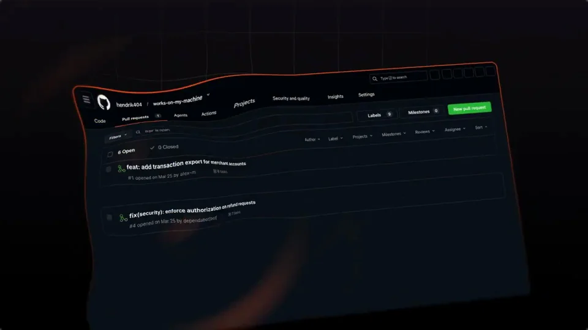
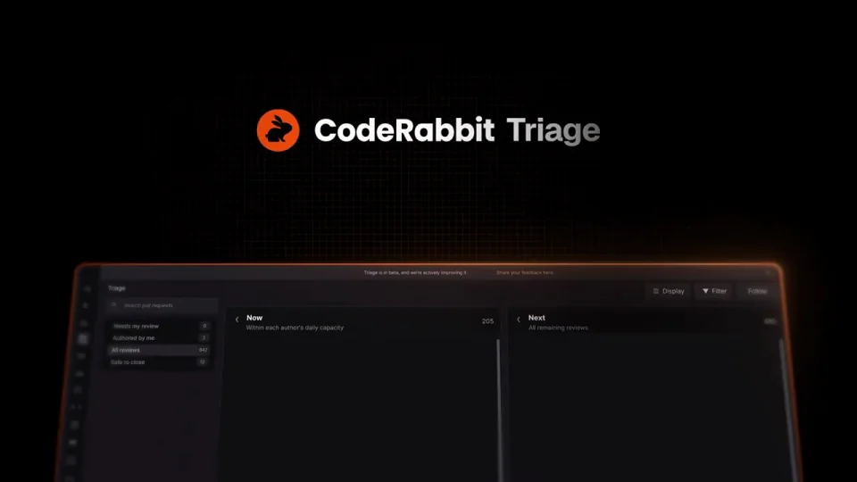
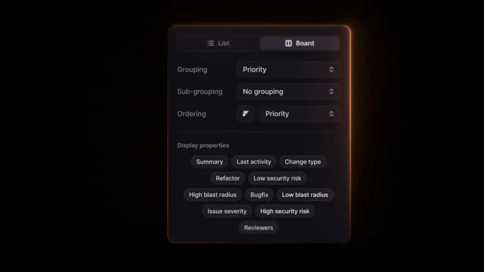
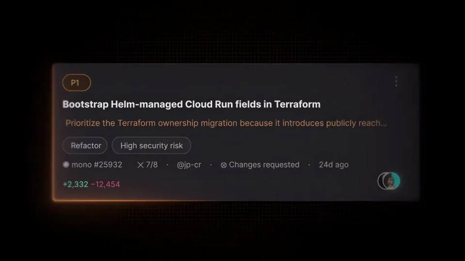

CodeRabbit / V179
CodeRabbit [blocked] Triage
先展示排队与催审带来的负担，再把列表转为按紧急程度、近期变化和推进情况排序的看板。橙色始终追踪最需要处理的一项。
构图与编排 可播放 · 可替换内容
整体编排规则示例
查看 HTML 源码
<!doctype html><html lang="zh-CN"><meta charset="utf-8"><meta name="viewport" content="width=device-width,initial-scale=1"><title>CodeRabbit [blocked] Triage · sequence</title><style>html,body{margin:0;width:100%;height:100%;overflow:hidden;background:#0c0e12}canvas{display:block;width:100%;height:100%;object-fit:contain}</style><body data-mode="sequence"><canvas width="1000" height="600"></canvas><script src="data.js"></script><script src="common.js"></script><script src="scene.js"></script><script src="bridge.js"></script></body></html>画面元素催审消息请求列表选中行分诊看板排序条件风险标签代码块
MOTION LANGUAGE
动作与构图
局部动作 · 构图规则
01
把请求拥挤感限制在开场
把请求拥挤感限制在开场规则示例
查看 HTML 源码
<!doctype html><html lang="zh-CN"><meta charset="utf-8"><meta name="viewport" content="width=device-width,initial-scale=1"><title>CodeRabbit [blocked] Triage · sequence</title><style>html,body{margin:0;width:100%;height:100%;overflow:hidden;background:#0c0e12}canvas{display:block;width:100%;height:100%;object-fit:contain}</style><body data-mode="clip" data-start="13" data-end="19"><canvas width="1000" height="600"></canvas><script src="data.js"></script><script src="common.js"></script><script src="scene.js"></script><script src="bridge.js"></script></body></html>黑底消息卡短促叠入，随后切到较小的请求列表。镜头拉近时只放大一行，其余内容退暗，给“先处理哪一个”建立焦点。
02
排序条件比卡片装饰更重要
排序条件比卡片装饰更重要规则示例
查看 HTML 源码
<!doctype html><html lang="zh-CN"><meta charset="utf-8"><meta name="viewport" content="width=device-width,initial-scale=1"><title>CodeRabbit [blocked] Triage · sequence</title><style>html,body{margin:0;width:100%;height:100%;overflow:hidden;background:#0c0e12}canvas{display:block;width:100%;height:100%;object-fit:contain}</style><body data-mode="clip" data-start="30" data-end="38"><canvas width="1000" height="600"></canvas><script src="data.js"></script><script src="common.js"></script><script src="scene.js"></script><script src="bridge.js"></script></body></html>紧急程度、近期变化与推进情况用三组绿色标签围绕看板出现。条件出现后，卡片重新排位；高风险项以橙色标签保持可见。
03
让结尾落在可执行的一项
选中请求展开摘要、变更类型和风险提示，光标落到开始审查。文案宜短，代码块只是上下文，避免抢占主控件的阅读空间。
04
替换为其他队列时保留排序逻辑
可用于工单、内容审核或任务分诊；同步替换排序条件、卡片摘要与操作按钮。优先级变化应有业务依据，不做随机洗牌。
SEQUENCE
段落与节奏
点击段落，定位到上方编排示意。




画面参考 · 离散静帧
KEEP THE RELATIONSHIPS
制作其他主题
- 替换队列对象与排序依据；保留过载→分诊→高优先级行动。
制作约束
催审消息 / 请求列表 / 选中行 / 分诊看板 / 排序条件 / 风险标签 / 代码块
- 黑底消息卡短促叠入，随后切到较小的请求列表。镜头拉近时只放大一行，其余内容退暗，给“先处理哪一个”建立焦点。
- 紧急程度、近期变化与推进情况用三组绿色标签围绕看板出现。条件出现后，卡片重新排位；高风险项以橙色标签保持可见。
- 选中请求展开摘要、变更类型和风险提示，光标落到开始审查。文案宜短，代码块只是上下文，避免抢占主控件的阅读空间。
- 可用于工单、内容审核或任务分诊；同步替换排序条件、卡片摘要与操作按钮。优先级变化应有业务依据，不做随机洗牌。